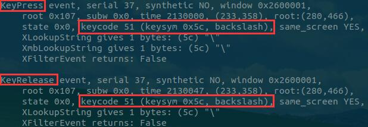
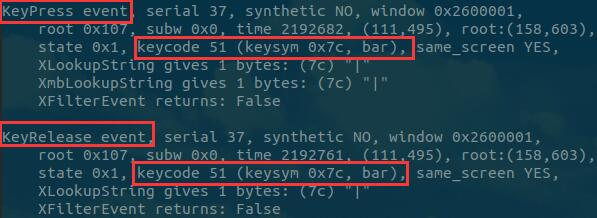

Linux下无法输出管道符号
写在前面
个人认为这种情况大部分发生在杂牌笔记本电脑上，比如说我的电脑
无法输出”|”或”"很大可能是键盘映射的问题。
使用工具: xmodmap
命令: xmodmap -e "keycode 94 = backslash bar"
方法局限性: 只能解决在图形化界面的键盘映射
命令详解
- 为什么不能解决 tty 界面的问题？
通过 man 手册得出结论:
xmodmap - utility for modifying keymaps and pointer button mappings in X
说明xmodmap只是在 X 服务下的一个小工具
- xmodmap 参数的意义
本质上是使用工具修改键盘映射
使用xev查看键盘映射， xev可能需要安装(根据个人系统决定)
xev # 启动xev通过 xev 的输出可以得出: 当敲击键盘，会产生两个事件，一个按下，一个释放
目标按键输出信息


backslash 为”\“的名称
bar 为”|”的名称
相对应的 94 其实就是当前按键对应的映射值
命令问题
只能在图形化界面使用
重启失效，建议作为启动项或者写成 shell 文件
写在后面
键盘问题可以有多种解决，比如外接一个键盘也能有效
由于xmodmap只能在图形界面使用，因此在 tty 界面会报错。
使用重定向隐藏。
xmodmap -e "keycode 94 = backslash bar" > /dev/null 2>&1
comment:
- Valine
- LiveRe
- ChangYan